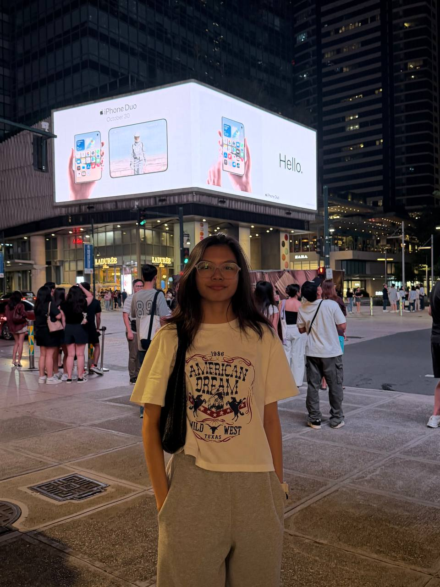
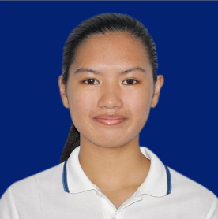
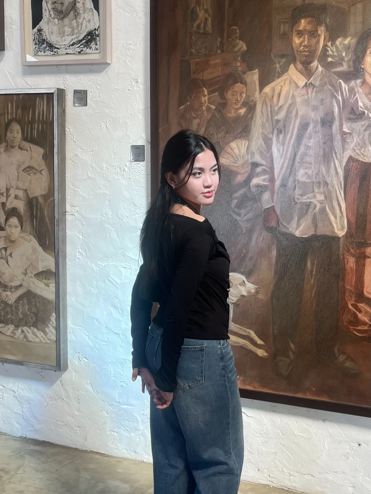

Eunice Rya Leigh Dela Cruz
Interested in technology, mobile applications, and digital content creation. Focused on building technical and creative skills.
A shared space documenting our experiences, academic work, and growth throughout the semester.
Meet our groupExplore our workThis ePortfolio brings together our group's background, learning experiences, performance tasks, assignments, and individual takeaways from the Prelim, Midterm, and Final Terms. Each section has its own page so visitors can explore our work clearly and easily.
Use the navigation above or the sections below to visit each part of our portfolio.
Four BSIT students with different interests, working together and learning more about technology.

Interested in technology, mobile applications, and digital content creation. Focused on building technical and creative skills.

Enjoys reading, movies, music, and exploring websites and applications. Aims to grow as an IT professional.

Enjoys movies, music, social media, and technology. Interested in creating useful applications and websites.
Interested in computers, programming, and technology. Wants to strengthen her technical skills for her future career.
Meet the members and learn about our group.
Browse learning activities and experiences.
Read each member's individual reflection.
View major outputs by academic term.
Find completed assignments by module and term.
Read our shared introduction and member profiles.